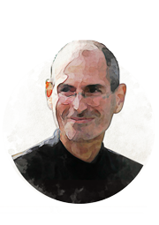

Клиент – это самый важный посетитель. Не он зависит от нас. Мы зависим от него. Он не прерывает нашу работу. Он – цель нашей работы. Он не по ту сторону нашего бизнеса. Он – его часть. Мы не делаем ему одолжение, обслуживая его. Он делает нам одолжение, давая возможность это сделать
Махатма Ганди
идеолог национально-освободительного движения в Индии

Стань ближе к своим клиентам, чем когда-либо. Настолько близко, что ты сможешь сказать им, что им нужно, прежде чем они сами это поймут
Стив Джобс
американский предприниматель, сооснователь и идеолог компании Apple
Когда вы пытаетесь принять важное решение и разрываетесь между двумя вариантами, спросите себя: если бы здесь был клиент, что бы сказал он?
Дхармеш Шах
сооснователь компании HubSpot

Мы всегда переоцениваем изменения, которые произойдут в ближайшие два года, и недооцениваем изменения следующих десяти лет. Не теряйте бдительности и не допускайте бездействия!
Билл Гейтс
председатель правления и главный архитектор программного обеспечения корпорации Microsoft
Ключ к успеху – это создание у клиентов реалистичных ожиданий, а затем эти ожидания нужно не просто оправдать, их нужно превзойти
Ричард Брэнсон
основатель корпорации Virgin Group
Каждый день мы задаем вопрос: «Как мы можем сделать наших клиентов счастливыми? Какие инновации нам нужно использовать для этого?
Билл Гейтс
председатель правления и главный архитектор программного обеспечения корпорации Microsoft